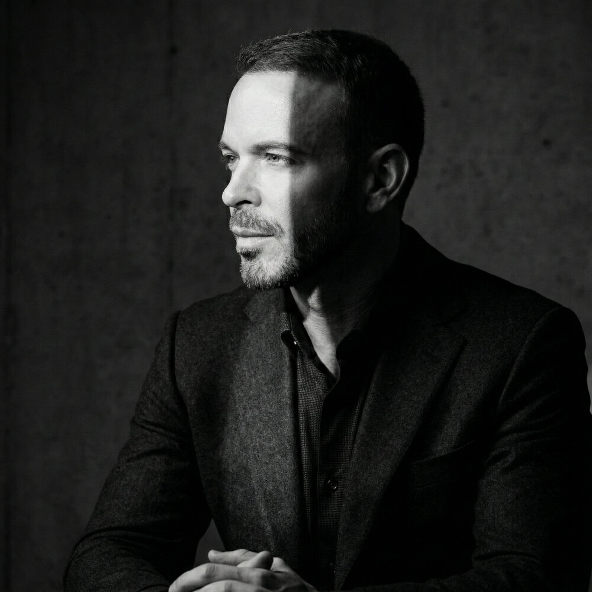

Sam Marks
Three-time founder and global investor, founder of the Spirit Bright Foundation, and host of Invest Like a Boss.
About
Sam Marks builds companies, backs founders, and travels the world asking what a well-lived life actually requires.
He started young — launching TheGreekFaces.com as a student in 2005 and selling it two years later. In 2009 he moved from Florida to the UK and founded SKYCIG, growing it into one of Europe's largest e-cigarette brands before its acquisition by Lorillard Tobacco (NYSE: LO) — a nine-figure exit — in 2013. He went on to found Coworker.com in 2015, building it into one of the world's largest marketplaces for flexible workspace, and led it as CEO through its acquisition by IWG plc.
Today, based between Bangkok and the road, Sam invests across public and private markets, hosts Invest Like a Boss, and builds communities around living and working with intention. He has spent time in over 100 countries — and, in 2024, as an ordained Buddhist monk in Thailand.
Selected Ventures
- TheGreekFaces.com
- SKYCIG
- Coworker.com
- Invest Like a Boss
Investing
Through Invest Like a Boss, Sam has interviewed hundreds of the world's best capital allocators — and put those lessons to work with his own money, across commercial real estate, early-stage startups, international and trading funds, and other categories. The approach is consistent: long-term, patient, and oriented toward asymmetric opportunities.
As Featured In
The Wall Street Journal · Financial Times · Fortune · Forbes
Beyond Business
Sam is the founder of the Spirit Bright Foundation, supporting education, animal welfare, and humanitarian work across Southeast Asia — and a student of the meditative traditions that shaped that work.